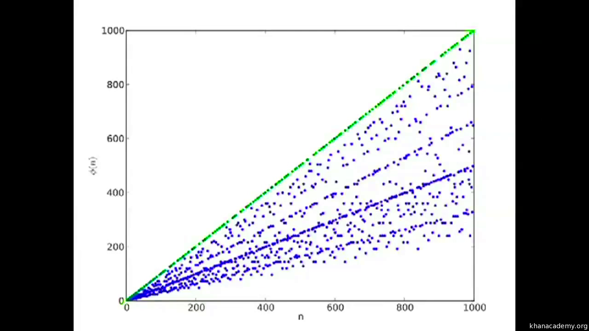

Funkcja Eulera
Za pomocą tej funkcji jesteśmy w stanie sprawdzić tak zwaną "rozbijalność" liczby. Polega to na wskazaniu liczb calkowitych mniejszych od n lub równych n nie mających z nią wspólnych dzielników.
Naszym n jest iloczyn p = 3 i q = 11.
3*11 = 33
Zauważono ciekawą zależnośc. Ogólnie funkcja Eulera jest ciężka do obliczenia oprócz dla liczb pierwszych. Na wykresie poniżej ukazuje się wykres tej funkcji od 0 do 1000. Zaznaczona linia składa się z liczb pierwszych.

Wartość φ dla liczby pierwszych wygląda:
φ(p) = p - 1
Weźmy na przykład liczbę 7.
φ(7) = 1 , 2, 3, 4, 5, 6, 7 = 6
Teraz obliczmy to za pomocą skróconego wzoru.
φ(7) = (7-1) = 6
Gdy już wiemy na czym polega funkcja Eulera, użyjmy jej dla naszego n
φ(n = 33) = (3-1) x (11-1) = 2 x 10 = 20